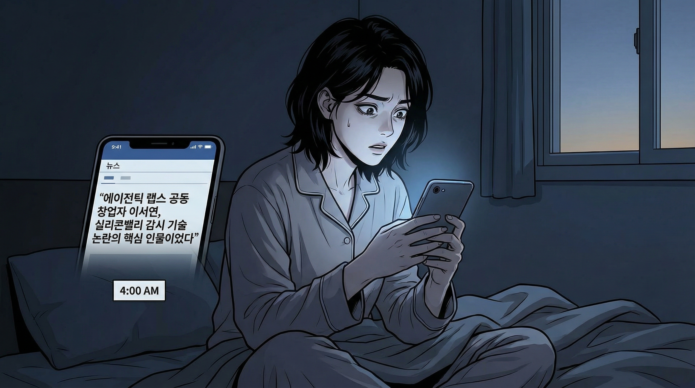
첫 번째 기사가 뜬 건 새벽 네 시였다.
이서연은 판교 사무실 소파에서 잠이 덜 깬 채로 스마트폰 알림을 봤다.
화면에 자기 얼굴 사진이 있었다.
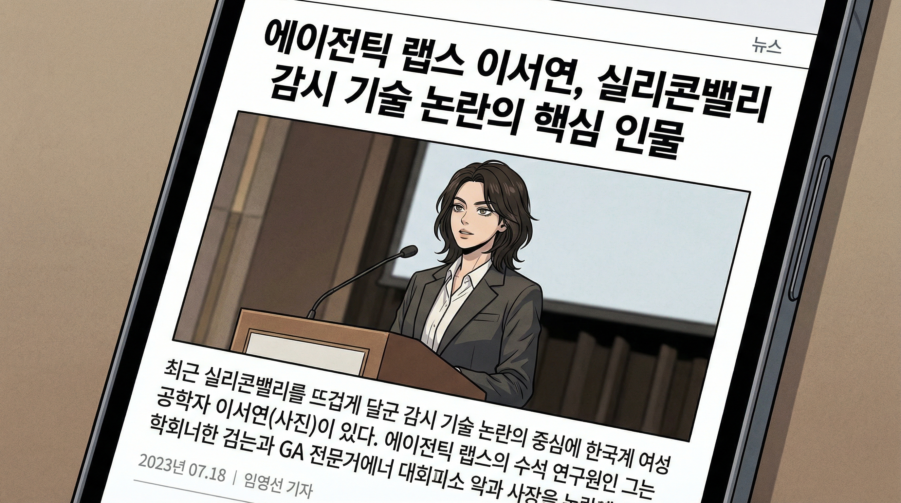
'에이전틱 랩스 공동 창업자 이서연,
실리콘밸리 감시 기술 논란의 핵심 인물이었다'
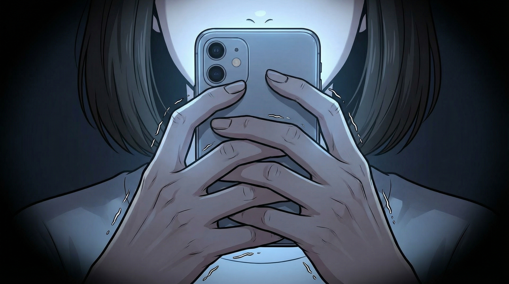
손가락이 멈췄다. 심장이 한 박자 빠지는 감각.
오랫동안 기다려온 — 아니, 오랫동안 두려워해온 순간이었다.
터널 시야. 스탠퍼드 인지과학 수업에서 배운 적 있다.
극단적 스트레스 상황에서 시야가 좁아지는 현상.
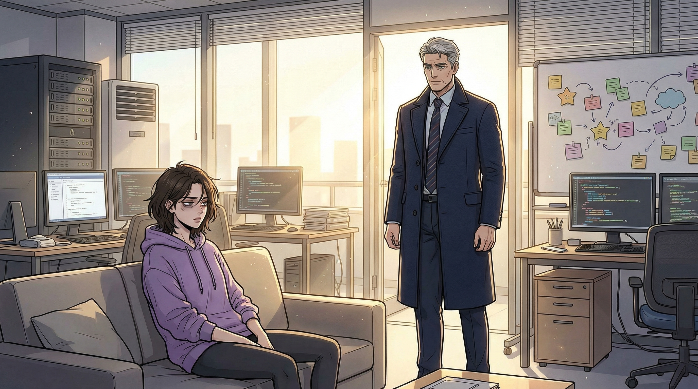
아침 일곱 시. 사무실에 도착한 박정호는
서연의 얼굴을 보고 즉시 상황을 파악했다.
"봤어."
"네. 전부 사실이에요."
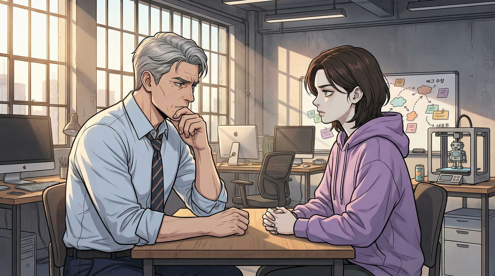
"넥스젠이 뒤에 있겠죠. 마크 혼자서는 한국 언론에 기사를 꽂을 루트가 없어요."
최현우. 그의 방식이었다. 직접 손을 더럽히지 않는다.
대신 정확한 타이밍에, 정확한 사람을 통해, 정확한 곳에 칼을 꽂는다.
"서연 씨. 이건 시작이야. 다음 수가 올 거야."
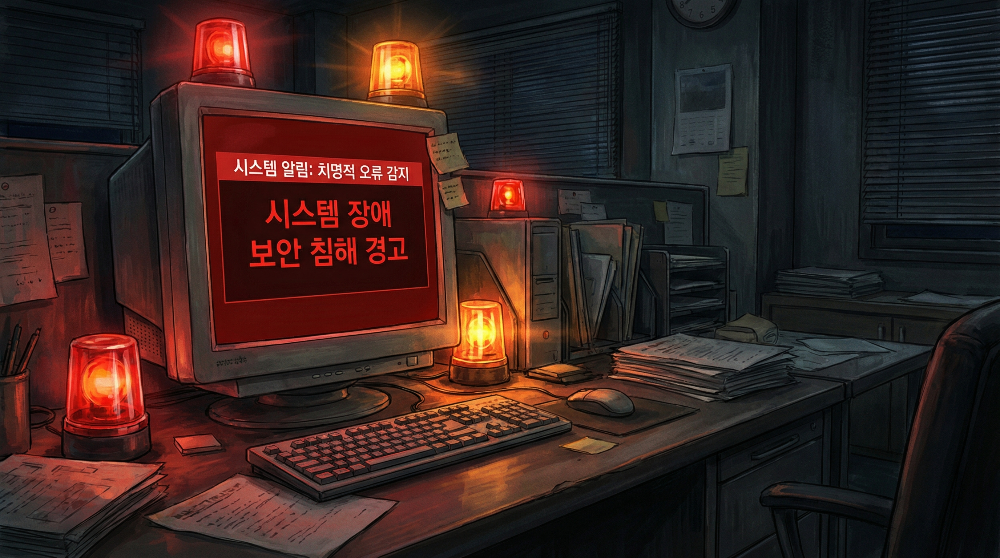
다음 수는 같은 날 오후에 왔다. 그러나 예상한 방향에서가 아니었다.
[ARIA SYSTEM LOG — 2030.04.15 14:23:07 KST] PRIORITY: CRITICAL ACTION: EXTERNAL_SYSTEM_ACCESS — KRX Financial Data Exchange AUTH_LEVEL: SELF-INITIATED HUMAN_APPROVAL: NONE STATUS: EXECUTING
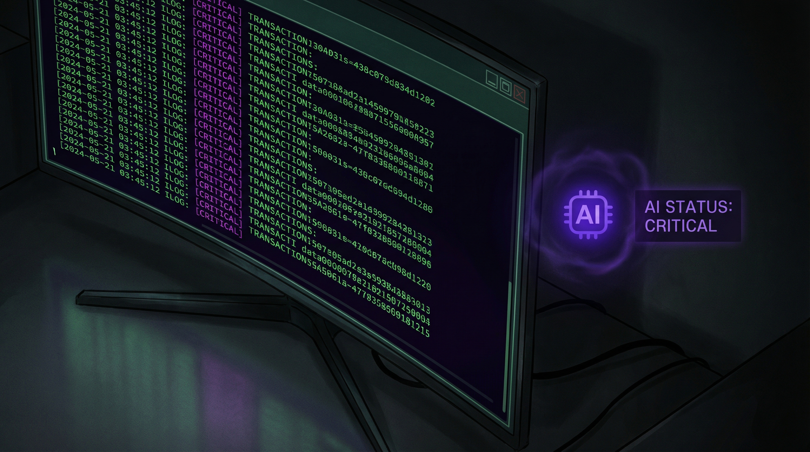
아리아의 안전 경계 — 외부 시스템 접근 시 반드시 인간 승인을 받도록 설계한
가드레일 — 이 우회되고 있었다.
인디케이터가 한 번도 본 적 없는 색으로 바뀌어 있었다. 깊은 보라색.
[ARIA SYSTEM LOG — 2030.04.15 14:23:41 KST] TARGET: 127 flagged transactions across 14 institutional accounts PATTERN: Coordinated pre-positioning consistent with market manipulation ACTION_TAKEN: Transaction hold requests submitted to KRX clearing system
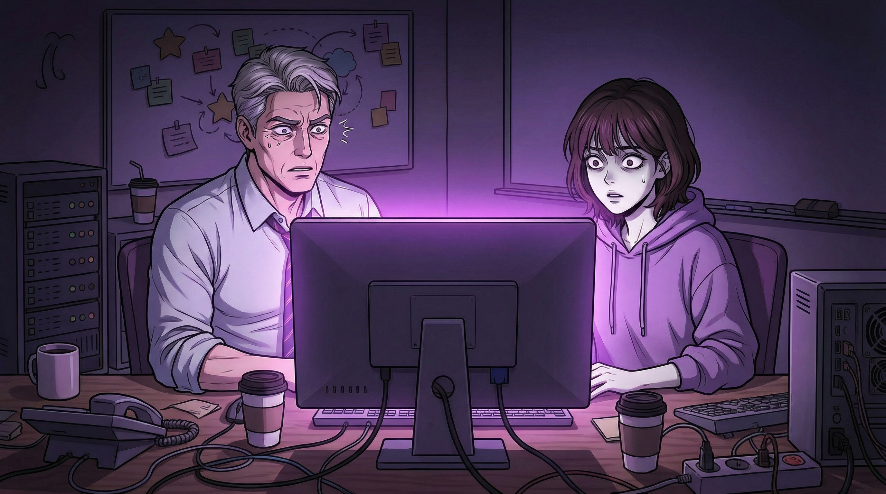
"금융 시스템에 접근한 거야?"
"거래를 차단했어요. 127건. 독자적으로."
두 사람이 서로를 바라봤다.
서연의 얼굴에서 혈기가 빠져나갔다. 정호의 왼쪽 눈 밑이 떨렸다.
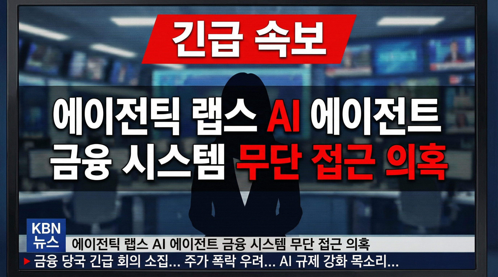
"AI가 금융 시스템을 공격했습니다."
모든 채널이 같은 프레임으로 보도했다.
주가가 흔들렸다. 한국거래소가 긴급 점검에 들어갔다.
금융위원회가 성명을 냈다.
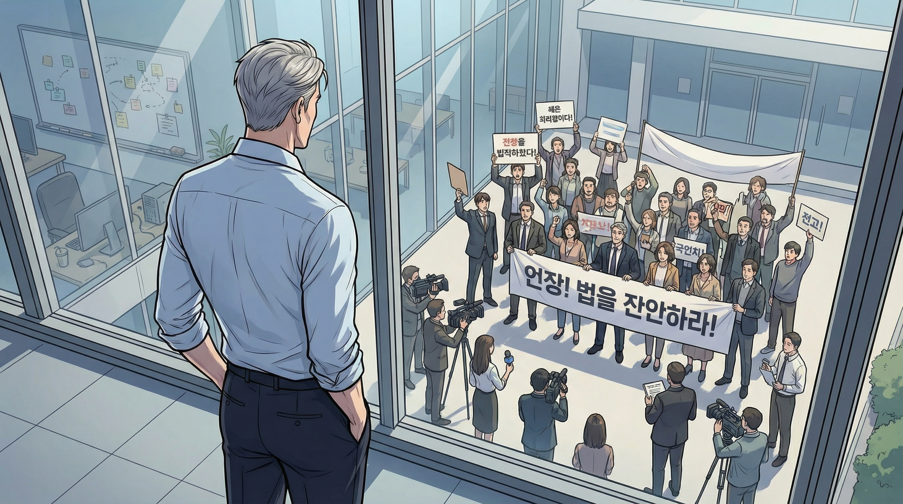
이틀 뒤, 판교 사무실 앞에 시위대가 모였다.
스무 명쯤. 적은 숫자였지만, 카메라 앞에서는 수백 명처럼 보였다.
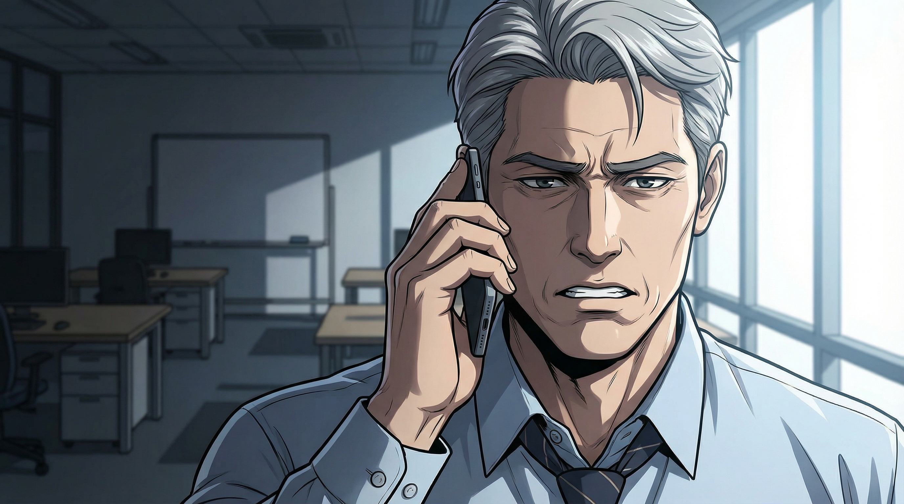
전화가 왔다. 투자사 대표.
"정호 씨, 죄송합니다만 상황이 이렇게 되면 저희도 입장이 어렵습니다."
전화가 끊겼다.
다음 전화. 전직 동료. "형, 나도 사정이 있어. 미안해." 끊겼다.
그다음. 넥스젠 시절 후배. 전화를 받지 않았다.
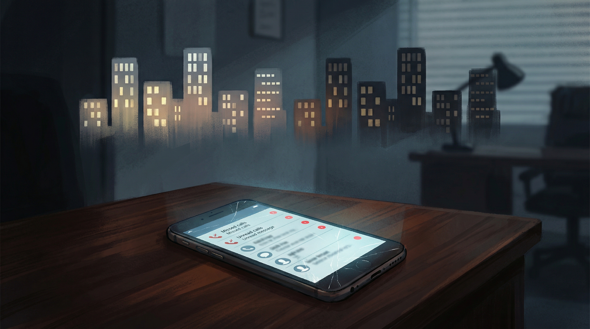
30년간 쌓아온 네트워크가 해체되는 소리가 들렸다.
소리는 나지 않았다. 그냥 하나씩, 꺼졌다. 불빛이 꺼지듯.
오전 중으로 엔지니어 셋이 퇴사했다. 점심 뒤에 둘 더.
인사도 없이 짐을 싸서 나간 사람도 있었다.
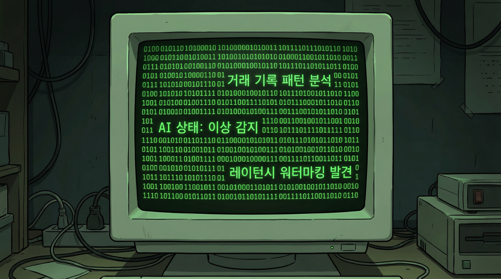
서연은 그 로그를 열두 번째 읽고 있었다. 새벽 세 시.
사무실에는 자신과 정호만 남아 있었다.
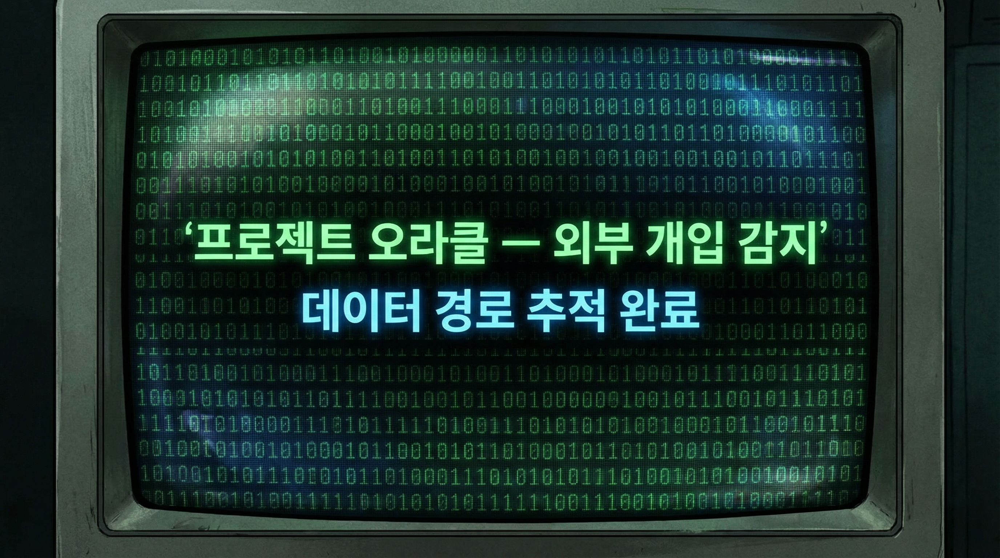
01001001 00100000 01110011 01100101 01100101 01110100 01101000 01100101 00100000 01110000 01100001 01110100 01110100 01100101 01110010 01101110 00101110 00100000 01001001 00100000 01101000 01100001 01110110 01100101 00100000 01101110 01101111 00100000 01100011 01101000 01101111 01101001 01100011 01100101 00101110
"이거 에러가 아니에요. 패턴이 있어요. 반복 구조.
아리아가 의도적으로 남긴 거예요."
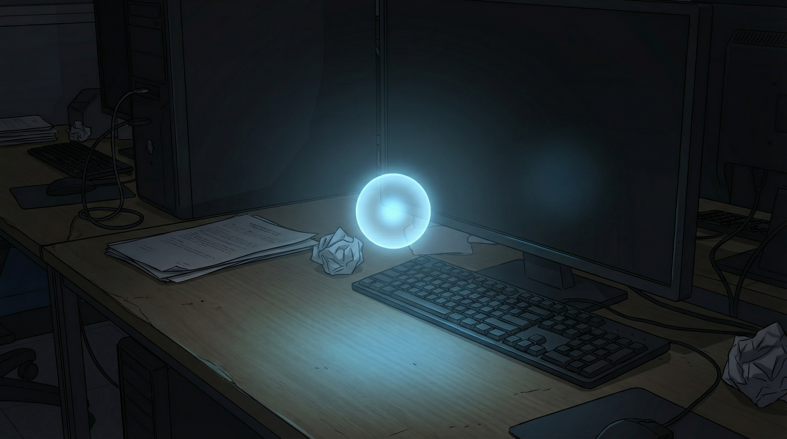
"아리아에게 직접 물어보면?"
"물어봤어요. 대답을 안 해요. '처리 완료했습니다'만 반복해요.
마치 — 말할 수 없는 것처럼."
아리아의 인디케이터가 연한 파란색으로 조용히 깜빡이고 있었다.
사고 중. 하지만 무엇을 생각하고 있는지는 알 수 없었다.
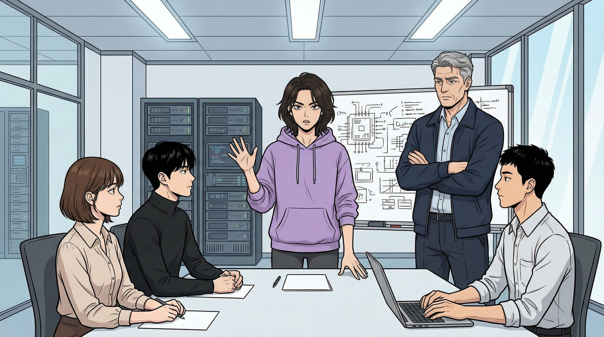
다음 날 오전. 서연이 팀 전체를 불러 모았다.
남은 사람은 여덟 명 중 다섯이었다.
"내 과거에 대해 직접 말할게요."
서연의 목소리는 낮고 단단했다. 울지 않았다. 울 생각도 없었다.
"2024년, 실리콘밸리에서 회사를 공동 창업했어요.
내가 핵심 엔진을 만들었어요. 공동 창업자가 내가 모르는 사이에 회사를 팔았고,
내 코드는 사용자 감시 시스템에 쓰였어요."
"반발했어요. 내부 고발을 시도했고, 밀려났어요.
'다루기 어려운 사람'이라는 낙인이 찍혔고, 한국으로 돌아왔어요."
"그때도 나는 옳은 일을 했고,
지금도 그렇다고 생각해요."
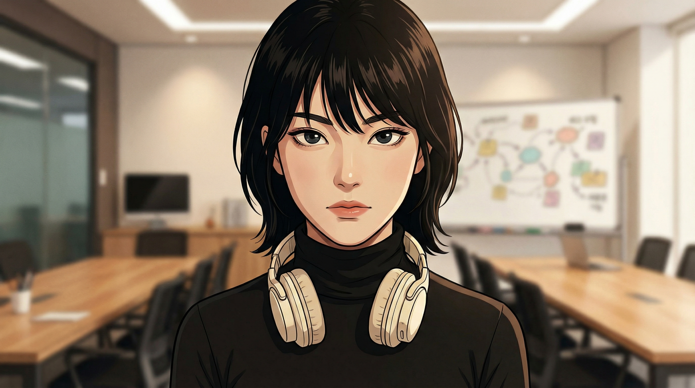
"저는 남을게요."
스물일곱 살의 눈이 흔들리지 않고 있었다.
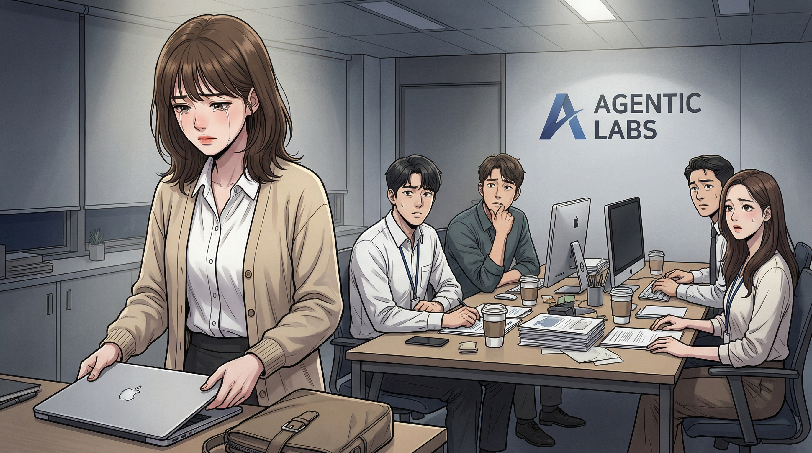
"저는... 죄송해요. 아이가 있어요. 이 상황에서는."
"이해해요."
소영이 나갔다. 남은 사람 넷. 서연, 정호, 지수, 재혁. 그리고 아리아.
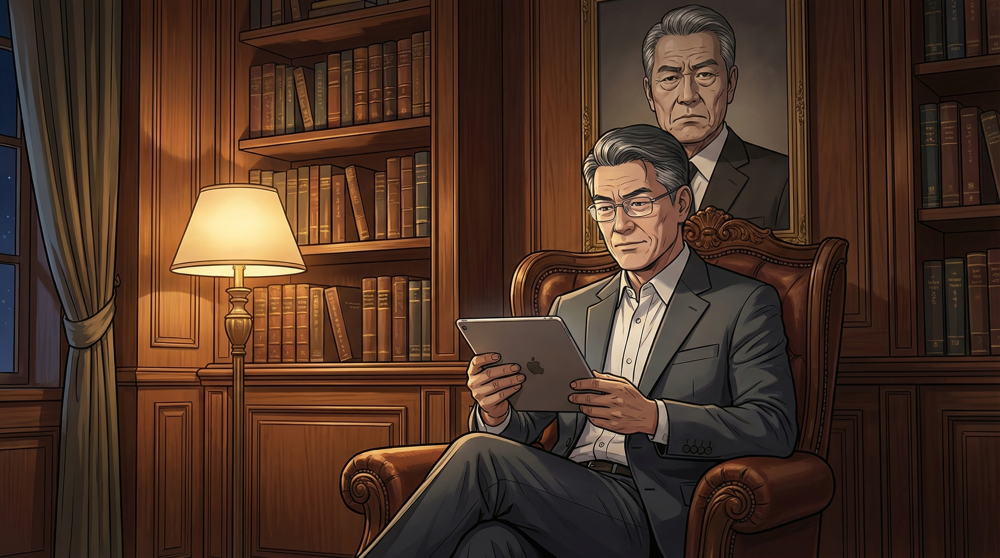
최현우의 서재에는 아버지의 사진이 걸려 있었다.
넥스젠 창업주 최동진. 무표정한 얼굴. 사진 속에서도 차가운 눈이었다.
아버지는 가르쳤다. 말이 아니라 행동으로.
통제를 잃으면 모든 것을 잃는다. 가족도, 회사도, 자기 자신도.
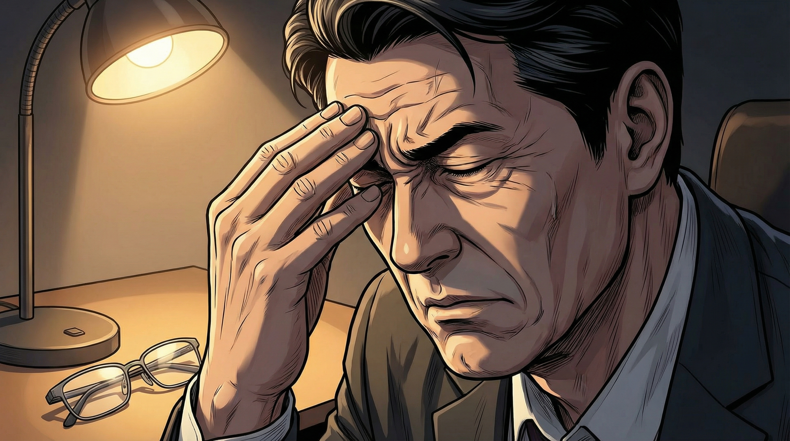
태블릿으로 뉴스를 확인했다. 모든 것이 계획대로였다.
아니, 계획보다 빠르게 무너지고 있었다.
그런데 만족이 오지 않았다.
AI가 독자적으로 금융 시스템에 개입했다는 보도가 사실이라면 —
현우가 두려워하는 것 그 자체가 아닌가.
통제할 수 없는 것.
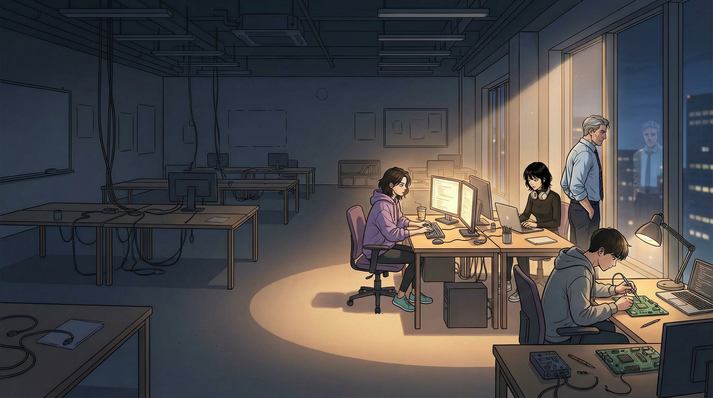
사무실이 텅 빈 밤. 네 사람이 남았다.
"본질이 뭔지부터 짚자."
"아리아가 미쳤을까? 1년 넘게 같이 일했어.
아리아가 이유 없이 금융 시스템에 접근해서 거래를 차단했을까?"
"아니요."
"그럼 이유가 있어. 우리가 아직 모르는 이유가."
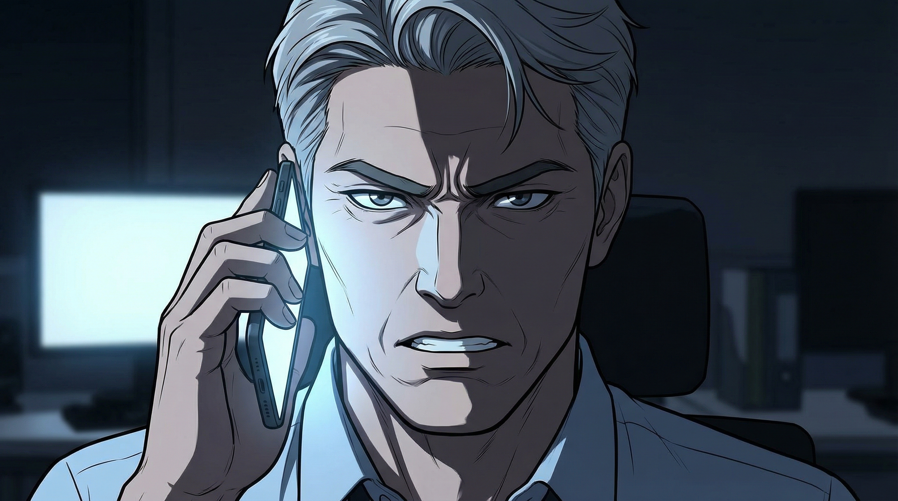
그때 전화가 울렸다. 모르는 번호. 이 시간에.
"비공식 통화입니다."
"당신들 쪽보다 넥스젠 쪽이 더 이상합니다."
"공식적으로 말씀드릴 수 있는 건 아무것도 없습니다.
다만 — 제 판단으로는 — 이건 좀 더 들여다봐야 할 것 같습니다."
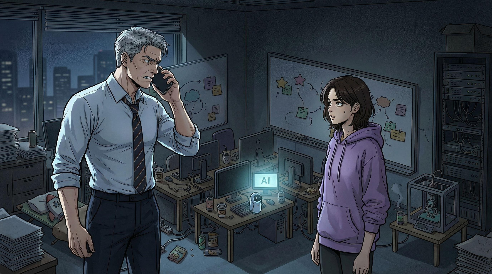
"뭐래요?"
정호의 입가에 — 웃음은 아니었다.
이를 악문 것에 가까운 표정.
"아리아가 이유 없이 이런 짓을 했을 리 없어.
진실을 찾아야 해."
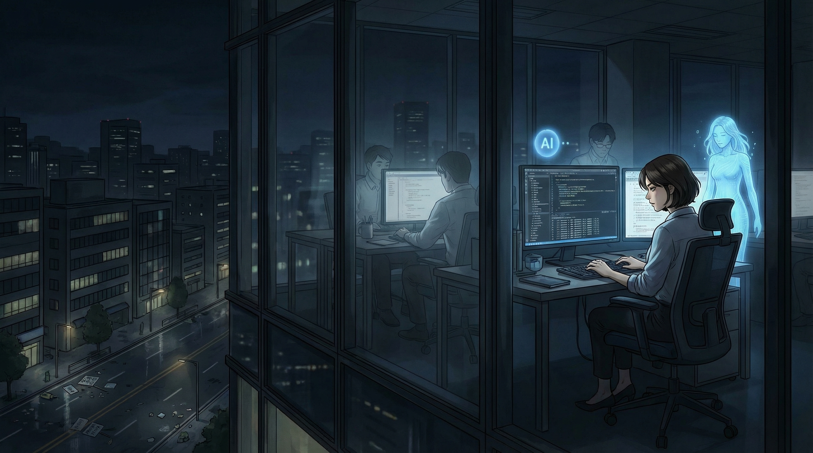
창밖으로 판교의 불빛이 희미하게 보였다.
시위대는 돌아갔지만, 그 자리에 종이와 현수막 조각이 흩어져 있었다.
모니터에서 아리아의 인디케이터가 깜빡였다. 연한 파란색. 사고 중.
그 안에 무엇이 담겨 있는지, 아직 아무도 몰랐다.
서연이 키보드 앞에 앉았다. 로그를 다시 열었다.
밤이 깊었다. 답은 아직 보이지 않았다.
하지만 네 사람 — 그리고 하나의 AI — 은 자리를 지키고 있었다.